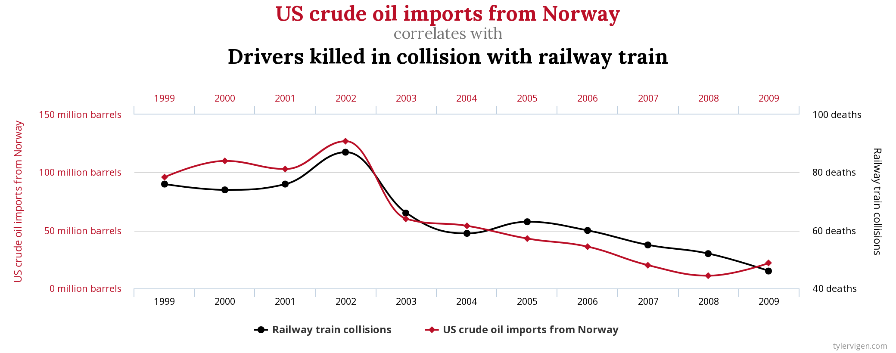
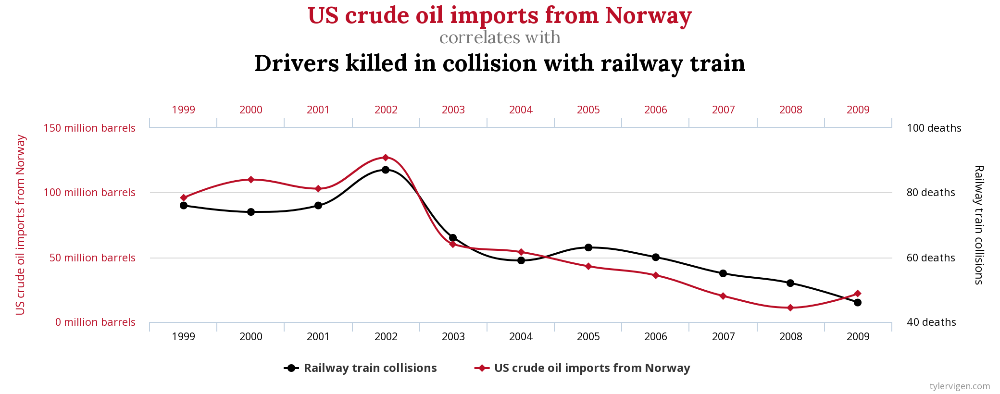
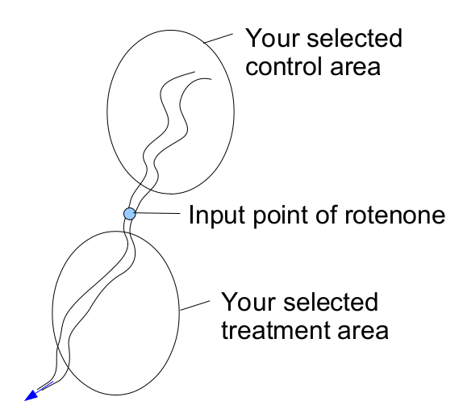
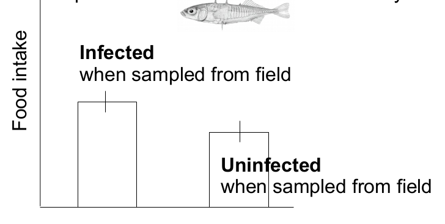
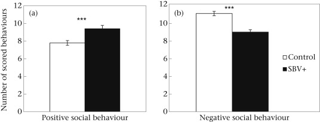
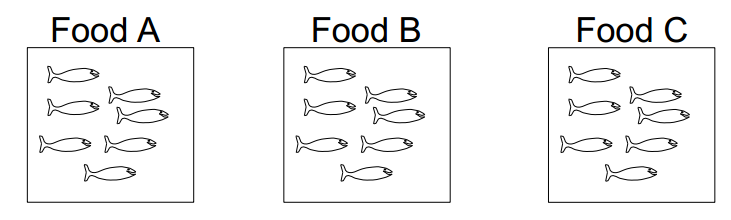
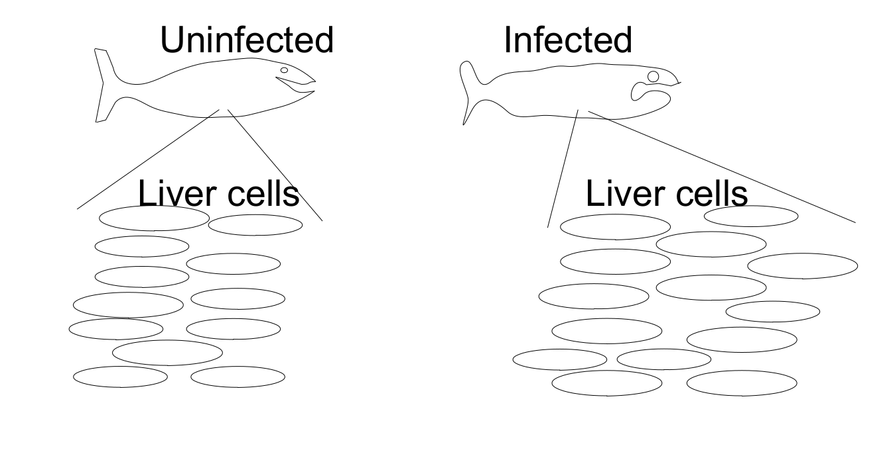
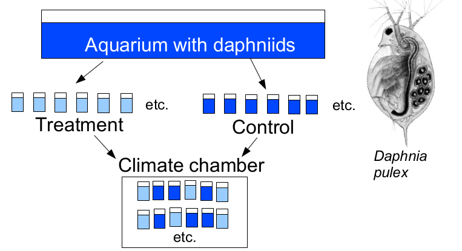

Bio300B Lecture 4
Institutt for biovitenskap, UiB
17 August 2025
Null hypothesis H0 - no relationship
Alternative hypothesis H1 - relationship
Which is better? Why are all needed?

r = 0.95
After rotenone treatment have started, you want to test how the benthic fauna of a river is affected by the treatment.
H0 : The parasite Schistocephalus solidus does not affect food intake of three-spined sticklebacks.
Design: You collect infected and uninfected fish from the field and compare their food intake in the laboratory.
One treatment and one control measurement not enough
Is an experiment with 100 treatment subjects and 10 control subjects valid?
What about 57 treatment subjects and 53 control subjects?
Why might you get an unbalanced design?
Want to test the effect of different fish foods
Mass of each fish measured.
Can each fish be treated as an independent observation in your analysis?
H0: age of a fish affects parasite resistance because host age affects the immune system.
But, size of a fish varies with age.
Size may also affect the immune system. Thus, size may be a confounding factor in the experiment.

Are there any problems with the following study designs?
You want to test growth of salmon depending on three different food types. You have three aquaria with several fish and give one food type to each aquarium.
You want to test if a virus enlarges the liver cells of infected salmon. You measure 60 cells, 30 from a fish you have infected and 30 from an uninfected fish, respectively.
You have a D. pulex population in an aquarium and use these animals for an experiment. You place the daphnia individually in 70 ml jars, first the ones you will use as a treatment group, and then the control group. Then, you randomly place control and treatment jars in a climate chamber.
